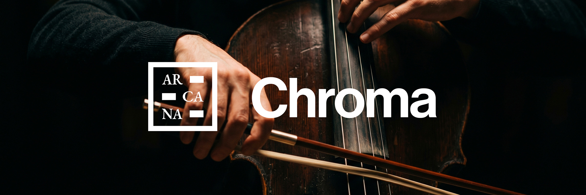
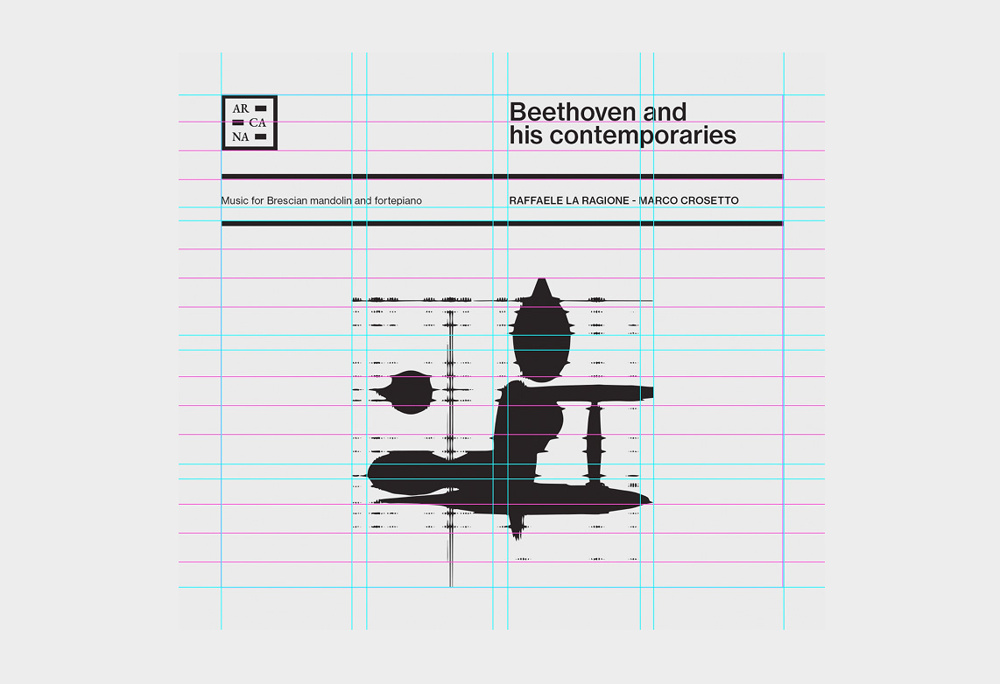
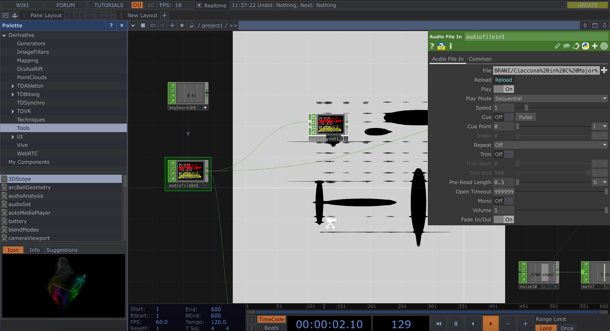
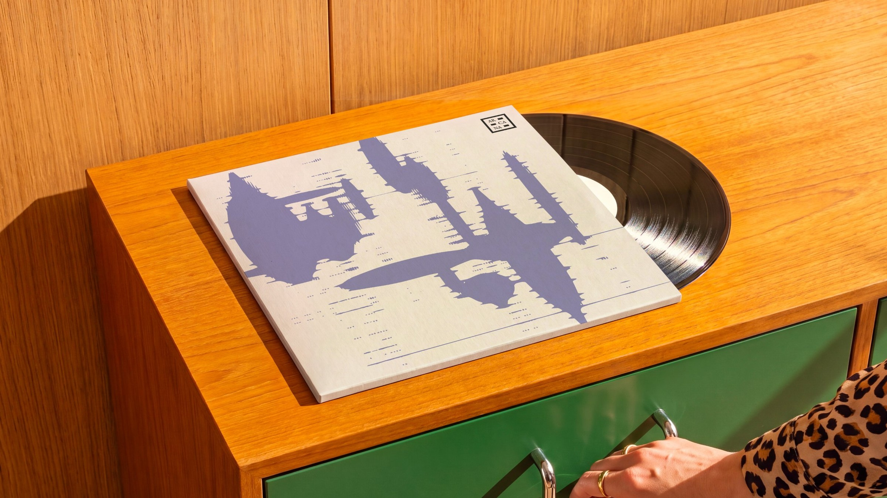
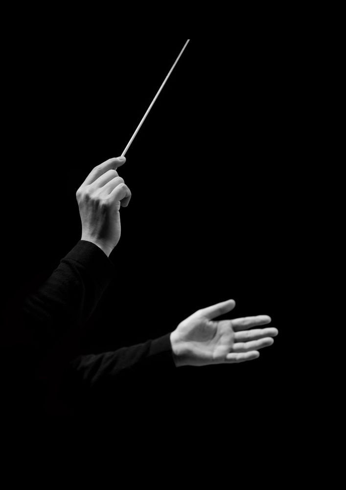
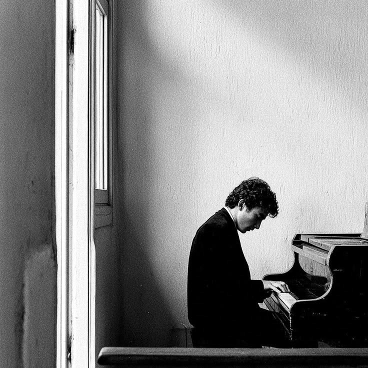
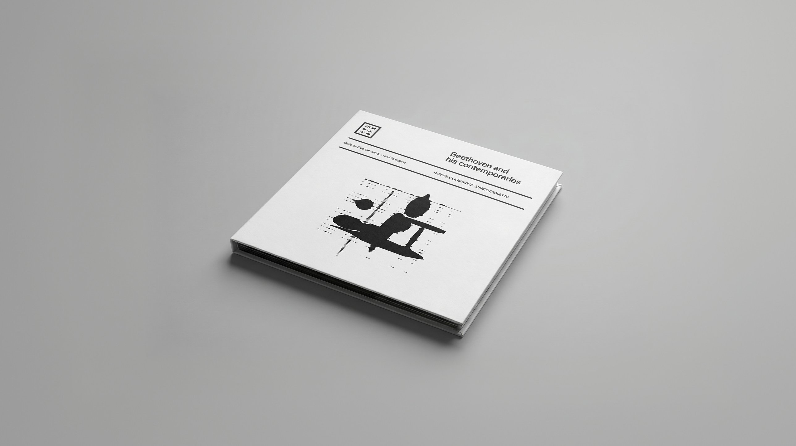
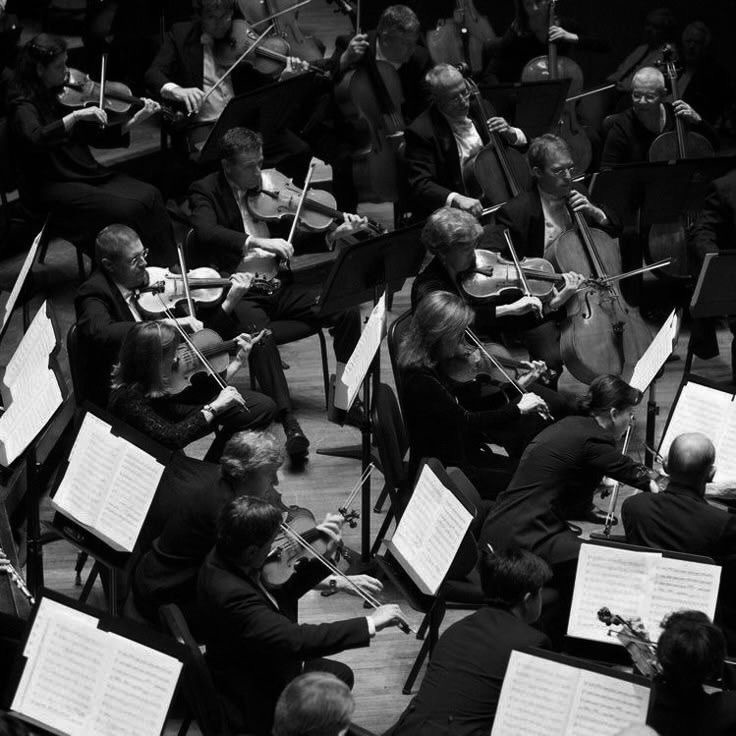
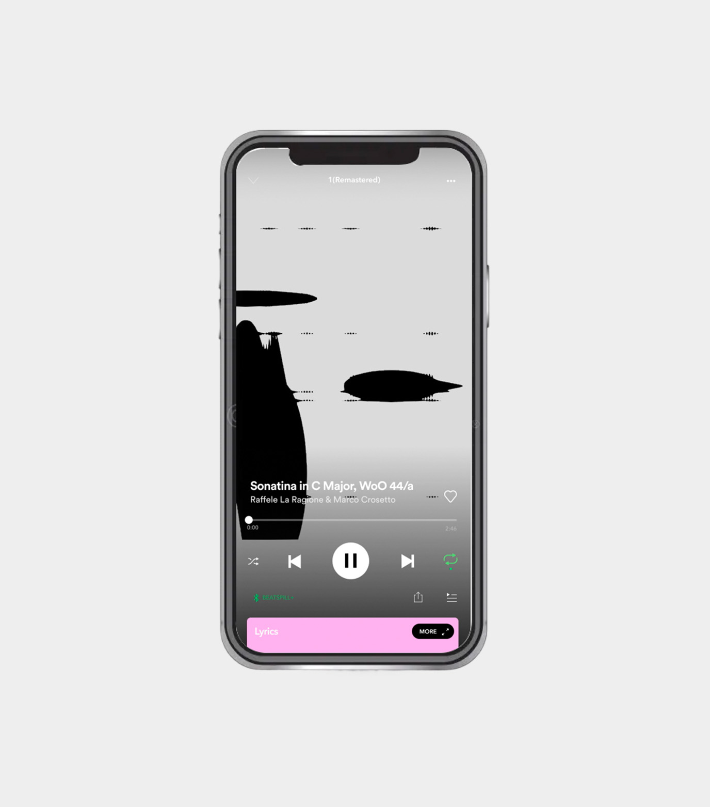

Arcana
Il progetto
Come si può trasformare il suono in un’esperienza visiva?
Il progetto nasce dalla sfida di ripensare l’identità visiva di Chroma, una collana musicale di Arcana, esplorando il rapporto tra musica, tecnologia e design generativo. Il concept si basa sull’idea di dare forma alla musica, trasformando le caratteristiche sonore di ogni traccia, frequenze, ritmi, tempi e intensità, in elementi grafici capaci di interpretarne l’essenza.
Attraverso TouchDesigner, abbiamo sviluppato un sistema generativo in cui è il suono stesso a guidare la composizione. Ogni brano diventa così il punto di partenza per la creazione di un visual unico, in continua trasformazione e strettamente connesso alla sua struttura musicale. Il risultato è un linguaggio visivo dinamico e riconoscibile, capace di mantenere una coerenza estetica tra le diverse tracce, valorizzandone al tempo stesso le singole identità.
I visual, pensati anche per accompagnare i brani durante lo streaming, ampliano l’esperienza di ascolto attraverso una dimensione visiva, trasformando la musica in qualcosa che non si limita a essere ascoltato, ma può anche essere visto. Un’identità che non si limita a rappresentare la musica, ma nasce direttamente da essa.








